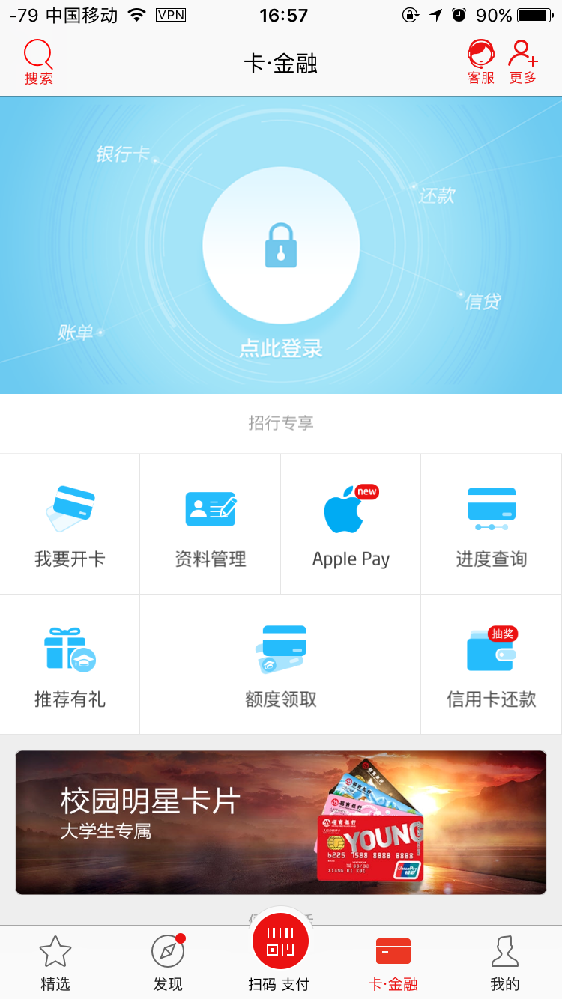
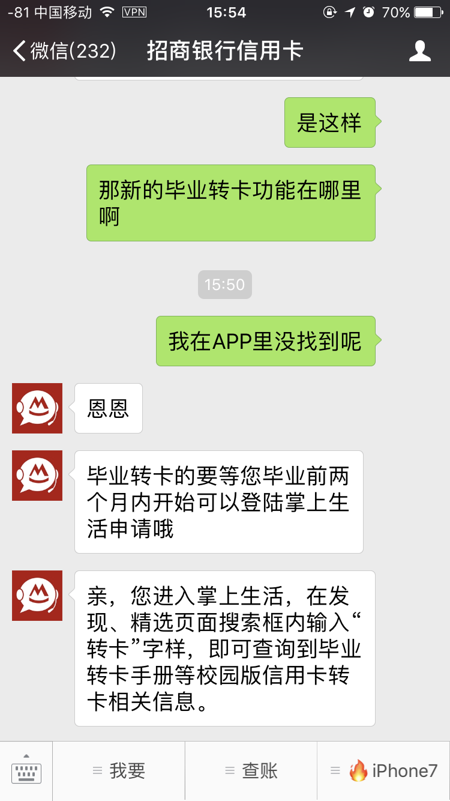
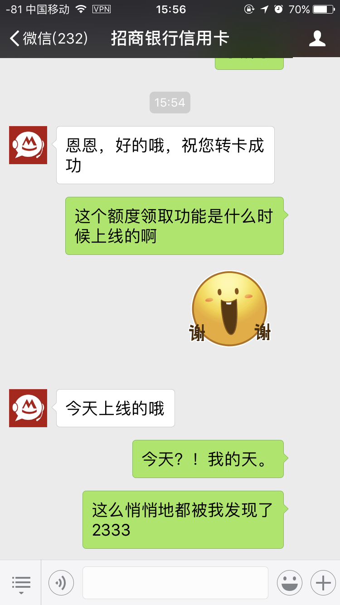
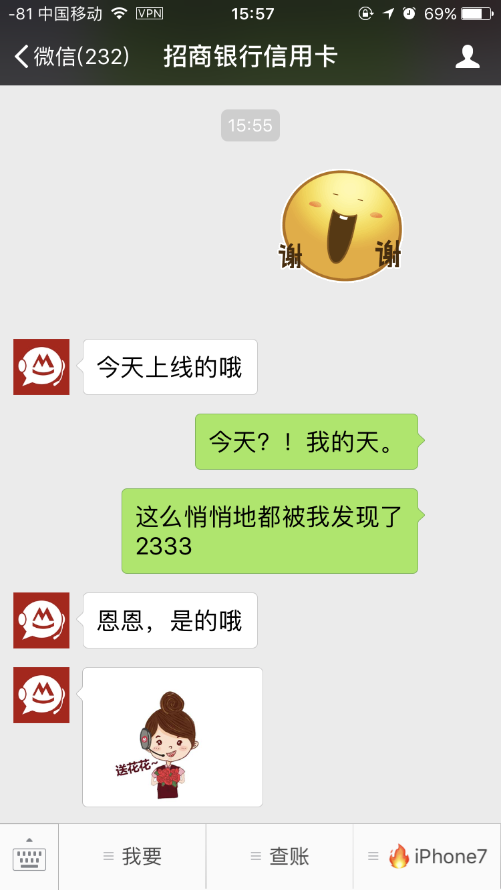
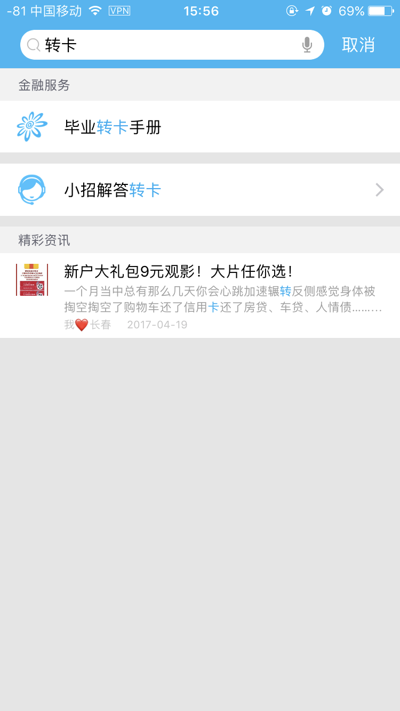

招行信用卡学生卡”额度领取“低调上线 学生卡也能享受完整的信贷服务
5月8日，如果有用招行学生卡的细心朋友会发现，招商银行掌上生活APP突然多了一个“额度领取”的功能（见图正中偏下方）。突然感到受宠若惊：怎么，学生卡也开始给额度了？
<!-- more -->

点进去之后，招行页面提示内容如下：
绿色信用倡导书
- 信用卡的所有记录均会纳入国家个人信用信息基础数据库。良好的用卡行为有利于累计信用。
- 如果出现逾期将对后续申请房贷等造成影响，所以切记一定要保持良好的用卡习惯及还款记录。
- 严禁使用信用卡套现。
- 不要将卡号、签字栏后三位数字、卡片有效期等信息随意透露给其他人。
- 为保障您的用卡安全，如有个人信息变动，一定要及时进线客服更新资料。
额度领用资格及流程
- 持有招商银行信用卡校园版产品且不持有校园版信用卡产品外任何招商银行信用卡产品(不包括商务卡和白金分期卡)的持卡人司旧时青额度领用。
- 具有额度领用资格的招商银行校园版信用卡持卡人，通过完善相关信息申请额度领用，若领用成功，即可实现封存额度自动解封，获得信用额度，并核发新卡。
全币种国际信用卡领用说明
- 招商银行校园版信用卡持卡人在申请额度领用的同时，即自愿申请全币种国际信用卡，使用该卡全球任意外币消费0外汇兑换费、有效朋内无附加条件免年费，是出国海淘必备卡片。
- 全币种国际信用卡默认开通了h币消费人民币入账。功能，且不可取消。持卡人的外币消费将自动转换成人民币并记入持卡人的信用卡人民币账户。
满怀好奇的小编去咨询了招行信用卡客服，于是有了如下对话：





当然，毕业学生工作后的”毕业转卡“并没有取消，只是入口下沉到内部了。各位可以在掌上生活APP的顶部搜索栏输入”转卡“即可找到（即上面那个”毕业转卡手册“）。
是否合规？
有可能有人问了：2009年银监会下发《关于进一步规范信用卡业务的通知》，大学生信用卡业务被叫停。现在招商银行这么做是否有违规嫌疑呢？
其实不然，这次招行其实也是响应新上任的银监会主席郭树清的倡议，探索大学生信贷市场，让正规军领路：
在银监会4月21日召开的一季度经济金融形势分析会上，银监会主席郭树清也对校园贷引发的恶性事件进行了反思。郭树清指出，银监会及银行业对整治校园贷也有责任，正在研究如何让银行更好地为大学生提供贷款服务，“把正门打开”。
郭树清表示，一些网贷机构在校园内违法违规开展高利贷，恶性事件频发，社会影响极坏。“社会批评我们银行对大学生的信贷业务服务不到位，他们找不到地方贷款就找网络或者社会上的高利贷。商业银行应研究如何把对大学和大学生的金融服务做到位。”
……
据悉，自2009年银监会下发《关于进一步规范信用卡业务的通知》，大学生信用卡业务被叫停，学生金融市场出现短暂空白。此后，部分银行虽仍然推出大学生信用卡。但信用额度极低、授信严格，难以满足处于消费需求旺盛期的大学生群体。
过去一年来，因为接连不断的负面事件和监管层的出手整治，校园贷市场走向规范和转型，以银行为代表的金融“正规军”开始重新重视这一市场。
慧响时评：正规军提供金融服务给大学生 并不是说着玩这么简单
的确，当前真的需要我们国家的正规军进驻校园市场，给校园贷正名，同时也应该推广正规、合法的信贷知识和对征信的真切理解。帮助大学生更好地度过校园的生活。
当然，在肯定创新、鼓励创新的同时，商业银行也要意识到背后的风险，让大学生群体这个特别的消费者群体既能享受金融创新带来的好处，又能意识到金融创新背后的风险。
所以，招行这次身先士卒，率先改进校园卡产品，推出”额度领取“，使大学生能够真正享受信用卡带来的服务，的确是一大进步。而且就目前已经体验过的用户来看，大多领取的额度都在5000以下，相对来说已经完全满足大学生日常的消费需求。其实对于当下社会的消费指数来说，已经合乎常理。
但是，提供服务只是第一步，如何通过信用卡的办理、使用过程中，给大学生培养良好的信贷观念，并且对征信有着良好的认知，才是最后银行监管部门和商业银行最根本的任务。让大学省消费人群知道透支消费的利弊，并培养其控制消费、加强理财的知识与能力的道路还任重而道远。